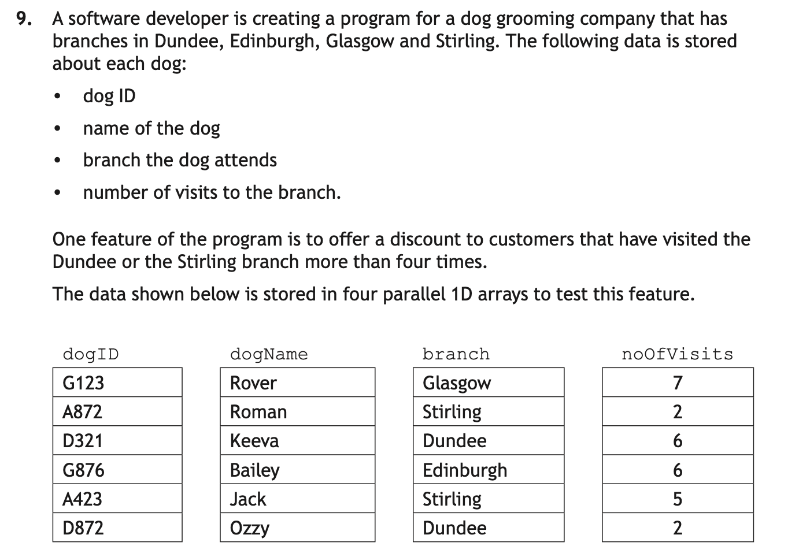
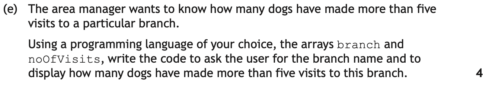
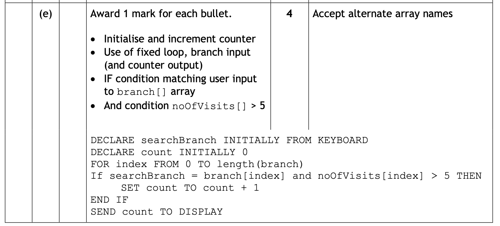
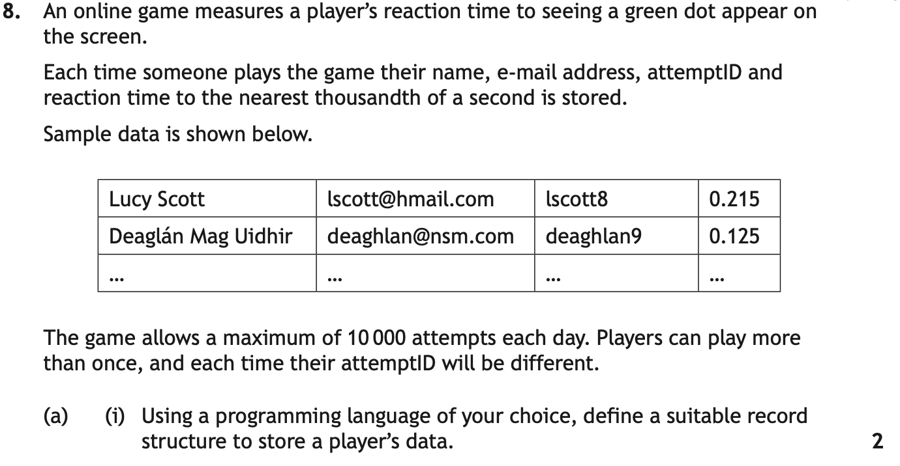
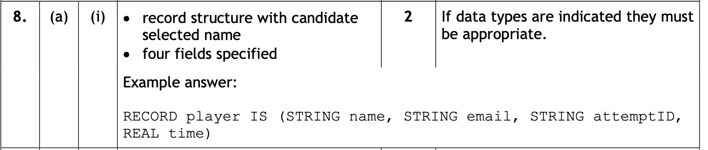
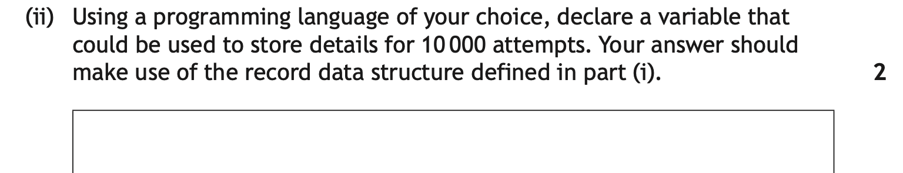
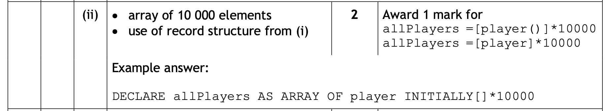
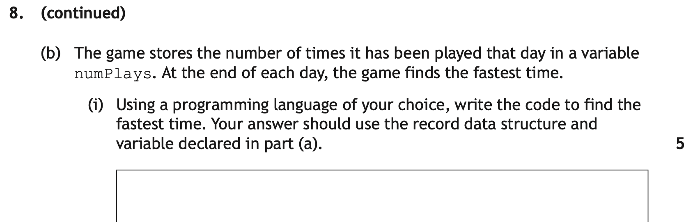
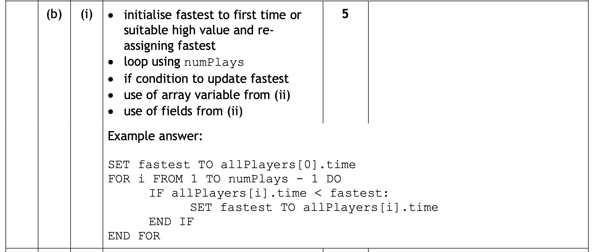

Data Structures
A data structure is a way of organising and storing related data so that a program can work with it efficiently. At Higher, you need to be able to use 2 data structures:
- A Parallel Array
- An Array of Records
- A Record - This is defined first, then used with an Array of Records.
Higher vs National 5: At National 5 you used simple 1D arrays. At Higher the three required structures are parallel 1D arrays, records, and arrays of records.
You will however, have to declare a record structure for an array of records.
On this page, we will cover how to use each of these Data Structures, and how they crop up in exam questions.
Key Terms
Parallel 1D Arrays
You already know that an array is a list of related values, called elements, that can be referred to by number, e.g. temperature[0], temperature[5] etc. The following example is an array of temperatures in the month of June.
| Index | 0 | 1 | 2 | 3 | 4 | 5 | 6 | 7 | ... | end of array |
|---|---|---|---|---|---|---|---|---|---|---|
| temperature | 12 | 20 | 21 | 14 | 18 | 22 | 23 | 25 | ... | 19 |
This next example adds a second array that records the date on which the temperature was taken.
We can look up the temperature on, say, the 8th of June, by looking for that date, and reading the corresponding temperature (14°). These are parallel arrays, because we can look up corresponding values, like a table.
| Index | 0 | 1 | 2 | 3 | 4 | 5 | 6 | 7 | ... | end of array |
|---|---|---|---|---|---|---|---|---|---|---|
| dates | 5/6 | 6/6 | 7/6 | 8/6 | 9/6 | 10/6 | 11/6 | 12/6 | ... | 30/6 |
| temperature | 12 | 20 | 21 | 14 | 18 | 22 | 23 | 25 | ... | 19 |
In the next example example, pupil marks are stored in one array, and pupil names are stored in another. We can see that Jack scored 23, and Lucy scored 24, by looking at the two arrays side-by-side, as if they were a table.
| Index | 0 | 1 | 2 | 3 | 4 | 5 |
|---|---|---|---|---|---|---|
| pupil_names | Harry | Elise | Jack | Joanna | Fraser | Kathryn |
| pupil_marks | 20 | 21 | 23 | 18 | 19 | 24 |
In python, there is no special syntax or different way to write these. We just declare two arrays, whereas most of the programs you’ve used would have previously only had one.
# Two *parallel* arrays of pupil names and marks pupil_name = ["Harry", "Elise", "Jack", "Joanna", "Fraser", "Kathryn"] pupil_mark = [20, 21, 23, 18, 19, 24]
If we want to find the name and mark of the fourth pupil in the list, we would say:
print(pupil_name[3]) print(pupil_mark[3])
By using the same index (3) we get matching/corresponding data.
Using Parallel Arrays
This example uses the two arrays of pupil names and marks above.
The first section of code prints out each pupil’s name and mark (pupil_name[count] and pupil_mark[count]).
The next section of code uses a standard algorithm (find max) to traverse the two arrays and find the highest mark. Each time a new maximum is found, it also sets a max_name variable that it uses to record who has scored the highest mark so far.
# Two *parallel* arrays of pupil names and marks
pupil_name = ["Harry", "Elise", "Jack", "Joanna", "Fraser", "Kathryn"]
pupil_mark = [20, 21, 23, 18, 19, 24]
# Print each pupil's name and mark together
for count in range(len(pupil_name)):
print(pupil_name[count], pupil_mark[count])
# Who got the highest mark?
max_mark = pupil_mark[0]
max_name = pupil_name[0]
for count in range(len(pupil_name)):
if pupil_mark[count] > max_mark:
max_mark = pupil_mark[count]
max_name = pupil_name[count]
print(max_name, "got the highest mark")
Parallel Arrays — Video Explanation
Below you will find a walkthrough of how to answer Parallel Array questions in an exam context.
Parallel Arrays — Exam Question Walkthrough
Practice Question
Parallel Arrays normally crop up in larger standard algorithm questions. You are unlikely to be asked to declare parallel arrays, you would just be expected to use them.
(Check the Design Page for other examples using Data Flow), and the Standard Algotihm Page for further examples of Standard Algorithm questions. This is Count Occurrences.


The first image introduces you to the Parallel Array data structure that stores: dogID, dogName, branch & noOfVisits.
The second image is the question that uses this data structure.
What the question is asking
Remember this questions is 4 Marks.You need to write code that:
- asks the user to enter a branch name
- checks every dog in the arrays
- counts only the dogs that:
- attend that branch
- have made more than five visits
- displays the final count
Working Through the Answer
Step 1: Identify the important arrays
The question tells you to use:
branchnoOfVisits
These are parallel arrays, which means the same index position refers to the same dog. For example:
branch[2] = "Dundee" noOfVisits[2] = 6
So dog 2 attends Dundee and has made 6 visits.
Step 2: Get the branch from the user
You need an input variable, for example searchBranch. This stores the branch the user wants to search for.
searchBranch = input("Enter branch: ")
Step 3: Set up a counter
You need to count how many matching dogs are found. Start the counter at 0:
count = 0
Step 4: Loop through every dog
Because the data is stored in arrays, use a loop to check each position. This checks every item in the branch array.
for index in range(len(branch)):
Step 5: Use an IF statement with two conditions
A dog should only be counted if both conditions are true:
branch[index]matches the user's branch, ANDnoOfVisits[index] > 5
In Python:
if branch[index] == searchBranch and noOfVisits[index] > 5:
Each correct condition would gain 1 Mark each.
Step 6: Increment the counter
If both conditions are true, add 1 to the counter:
count = count + 1
This along with step 3 would gain1 Mark.
Step 7: Display the final answer
After the loop has finished, display the count:
print(count)
This along with steps 2 & 4 would gain 1 Mark

Suggested answer
The python version would be:
searchBranch = input("Enter branch: ")
dogCount = 0
for index in range(len(branch)):
if branch[index] == searchBranch and noOfVisits[index] > 5:
dogCount += 1
print(dogCount)
The SQA Reference Language version would be:
RECEIVE searchBranch FROM KEYBOARD
SET dogCount TO 0
FOR counter FROM 0 TO LENGTH(branch)
IF branch[counter] = searchBranch and noOfVisits[counter] > 5
dogCount = dogCount + 1
END IF
END FOR
SEND dogCount TO DISPLAY
Records
A record is a collection of named fields that can each hold a different data type. Where an array stores many values of the same type, a record stores multiple attributes of a single item.
It works in much the same way as a database record, in that the data being stored is all related. For example you could store the name, year group, and average test score of a single pupil in a record.
Let's look at how we would represent this. Lets say I want to store the following data in a record within a program:
Pupil Name: Ewan
Year Group: S5
Average Test Score: 86
First I need to identify the fields, in this case: Pupil Name, Year Group & Average Test Score.. Then I need to identify the data types for these fields, in this case String, String & Integer.
I then need to come up with a relevant name for the record. I'll call it pupilRecord
I now need to take this information, and declare the record structure. You can see the SQA Reference Language version, and the Python version below. (NOTE: Python technically doesn't support records. However you can get similar functionality from a Dictionary which is the example given below. You can also use a class. Either is accepted in the exam/coursework.)
# SQA Reference Language Declaration
DECLARE pupilRecord AS RECORD (STRING: pupilName, STRING: yearGroup, INT: averageScore)
# Python Record Declaration using a Dictionary
pupilRecord = {"pupilName": "", "yearGroup": "", "averageScore: 0}
This however, just defines the record, it does not populute it with data. Normally, you will be populating an Array of Records as opposed to a single record, and you will do this when reading from a file. To see an example of this, Click Here.
To populate the record we can declare an empty record (as done in the code block above), and then add the data:
# Adding data to pupilRecord
pupilRecord["pupilName"] = "Ewan"
pupilRecord["yearGroup"] = "S5"
pupilRecord["averageScore"] = 86
To print, as with updating the record, we need to give the record name and the field name we want to print. If we just give the record name, it will print the entire record (field names and values).
# Printing a record
print(pupilRecord["pupilName"] + " in " + pupilRecord["yearGroup"] + " has an average score of " + pupilRecord["averageScore"] + "%")
In the exam, you only really need to worry about declaring the record structure correctly, which is what the example below will go into. In any programs you will write, you will read data from a file and populate an array of records. To see examples of how to do this Click Here.
Records — Video Explanation
Practice Question
The following is a typical Record declaration question, and normally acts as the 1st part of a larger multi-part question where you have to declare the record, array or records, and then use this data structure along with a standar algorithm. Sometimes however, this 1st part is already done (2024 past paper for example)

Some of the information we have is relevant for later parts, such as allowing a "maximum of 10,000 attempts per day".
Step 1 - Identify a Record Name - 1 Mark
First thing to do is understand what data is being stored so you can give the record a name with appropriate context. Sometimes we are given the name to use in the question so watch out for this. If that happens it will normally be in a different font.
In this case, we are not given a name to use in the question, and we are storing data about a players attempts while playing a game. So I will call my record playerDataRecord.
You can see the start of my answer below
# Part 1 of Record Declaration
# SQA Reference Langaugae Version
DECLARE pupilDataRecord AS RECORD
# Python Version
pupilDataRecord = {}
Step 2 - Identify the Fields & Data Types - 1 Mark
Now we have the record, we need to identify what data we are storing, and assign it the appropriate type. For this, we need to make sure we look at the sample data provided, and read the question thoroughly.
We are told that "Each time someone plays the game, their Name, e-mail, attemptID and reaction time" are stored. We have our 4 fields
Now we need to look at the sample data to identify the correct data types. Don't just infer what you assume is the data type, look at the sample data as this will confirm your assumptions.
We can see from the data that name will be a String, e-mail will be a String, attemptID will be a String & reaction time will be a REAL NUMBER.
So my updated answer would be
# Part 2 of Record Declaration
# SQA Reference Langaugae Version
DECLARE pupilDataRecord AS RECORD (STRING: name, STRING: e-mail, STRING: attemptID, REAL: reactionTime)
# Python Version
pupilDataRecord = {"name": "", "e-mail": "", "attemptID": "", "reactionTime": 0.0}
You can see from the marking instructions below that you pick up a:
- mark for the record delcaration
DECLARE pupilDataRecords AS RECORD - mark for the correct fields & data types.
(STRING: name, STRING: e-mail, STRING: attemptID, REAL: reactionTime)

This question will be continued in the Array of Records section below.
Arrays of Records
An array of records is a combination of a single Array from National 5, with a Record. Instead of every element of the array being a string or an integer, every element is a record.
This means you can store a list of complex items, each with multiple fields and different data types, all within the same structure.
Lets continue with the pupilRecord example from the records section. Lets say I want to store 5 pupils. I will need to declare the record first, then declare the array of records (both SQA Reference Language & Python examples given).
# Declaring pupil record - SQA Reference Language
DECLARE pupilRecord AS RECORD (STRING: pupilName, STRING: yearGroup, INT: averageScore)
# Declaring an Array of pupilRecords of size 5
DECLARE pupilArray AS ARRAY OF RECORD pupilRecord {} * 5
# Python - Declaring pupilRecord
pupilRecord = {"pupilName": "", "yearGroup": "", "averageScore: 0}
# Python - Declaring array of pupilRecord of size 5
pupilArray = [pupilRecord for x in range(5)]
Notice that you must use the correct record name, and this must differ from the name used for the array of records when declaring the array.
Now lets say we want to populate and print the array of records (Click Here to see a Read From File version which is the most common at Higher).
We will populate the array with the following records:
| pupilName | yearGroup | averageScore | |
|---|---|---|---|
| 0 | Ewan | S5 | 86 |
| 1 | Katherine | S5 | 67 |
| 2 | Charlie | S5 | 93 |
| 3 | Joanna | S6 | 73 |
| 4 | Rory | S4 | 35 |
Iterating Over an Array of Records
The next 2 blocks show the SQA Reference Language version of accessing and iterating over a array of records, and the python version.
The dot notation is very important for accessing the correct part of the record. The correct order is arrayName, followed by the array counter [counter] or whatever counter variable you have used (or a specific position in the array), then the dot notation & field name.fieldName.
E.g. if we wanted to print the last persons name in our array (as it is length 5) we would do pupilArray[4].pupilName
If we wanted to print all pupils names using a loop, inside the loop we would have pupilArray[counter].pupilName
# SQA Reference Language - Populating, Iterating & Printing
pupilArray[0].pupilName = "Ewan"
pupilArray[0].yearGroup = "S5"
pupilArray[0].averageScore = 86
...
pupilArray[4].pupilName = "Rory"
pupilArray[4].yearGroup = "S4"
pupilArray[4].averageScore = 35
FOR counter FROM 0 TO LENGTH(pupilArray) - 1 DO
SEND pupilArray[counter].pupilName & " got an average of " & pupilArray[counter].averageScore TO DISPLAY
END FOR
The python syntax differs slightly if you are using dictionaries. This does not matter for exams and you can use the dot notation above, but in your programs you will need to do the following:
# Python - Populating, Iterating & Printing
pupilArray[0][pupilName] = "Ewan"
pupilArray[0][yearGroup] = "S5"
pupilArray[0][averageScore] = 86
...
pupilArray[4][pupilName] = "Rory"
pupilArray[4][yearGroup] = "S4"
pupilArray[4][averageScore] = 35
for counter in range(len(pupilArray)):
print(pupilArray[counter].pupilName + " got an average of " + pupilArray[counter].averageScore)
Comparison: Parallel Arrays vs Array of Records
| Parallel Arrays | Array of Records | |
|---|---|---|
| Related data kept together? | Only by convention (same index) | Yes — one element holds all fields |
| Risk of mismatch | Higher — must keep arrays in sync | None — fields are part of the same element |
| Field access | Index: names[i], marks[i] | Dot notation: class[i].name |
| Preferred for | Simple numeric algorithms on one attribute | Storing and processing structured records |
Arrays of Records — Video Explanation
Below you will find a walkthrough of how to answer a multi-part Array of Records questions in an exam context.
You can then view a seperate practice question below and attempt to work through it before checking your answer against the solution provided
Array of Records — Exam Question Walkthrough
Practice Questions
We are going to continue to the next part of 2025 q8 a), as we answered this in the records section. To save you scrolling, the question and solution can be found below:
# Part 2 of Record Declaration
# SQA Reference Langaugae Version
DECLARE pupilDataRecord AS RECORD (STRING: name, STRING: e-mail, STRING: attemptID, REAL: reactionTime)
# Python Version
pupilDataRecord = {"name": "", "e-mail": "", "attemptID": "", "reactionTime": 0.0}
Remember in the original question it asked for a maximum of 10,000 attempts to be stored. This is the important bit for the array of records. You will always be given a size for your Array of Records, this must be carried through to your answer.
The question we are answering is:

There are 2 really important parts here:
- Declare a vairable that could be used to store 10,000 attempts
- Your answer should make use of the record data structure declared in part (i) - (see answer above for (i))
The name you use for your Array, must be different to that of your record. To answer this we must make sure the array is the correct size, and uses our record. The following will declare the array:
# Array of Record Declaration
# SQA Reference Langaugae Version
DECLARE attemptArray AS ARRAY OF RECORD pupilDataRecord () * 10000
# Python Version
attemptArray = [pupilDataRecord for x in range(10000)]
You can see the marking scheme below:

Be really careful if using python syntax for this question, as this is one of the rare occasions that incorrect syntax will cost marks, as you must have the for x in range(10000) part. This is becasue, without this, a copy of the record is created which means when 1 record is updated, all 10000 will be as well.
The next question will look at how to apply an array of records to a wider code quetsion.
Once you have declared your Record & Array of Record, you will be expected to use them, normally alongside a standard algorithm. In this question we are using Find Min.
(Check the Design Page for other examples using Data Flow), and the Standard Algotihm Page for further examples of Standard Algorithm questions.

What the question is asking
Remember this questions is 5 Marks. Some important points:
numPlaysstores the amount ot attempts in a day for the game. Remember this is up to a maximum of 10,000- At the end of each day the game finds the fastest time
We are being asked to write code that
- Finds the fastest time
- uses the data structure and variables declared in part (a) - This is hughely improtant as your logic can be perfect but you will drop marks if you don't use the array of records & record structure correctly.
Working Through the Answer
Step 1: Initialise any variables
We want to find the fastest time, the fastest time will be the smallest, so it is a find min
We don't need to initialise the array, for these questions we can assume it is already initialised and populated. But before we start the main logic of our answer, we need to initialise the Min (fastestTime).
We can't set it to 0, as nothing is smaller than 0. So, we can either set it to the first time in the array fastestTime = attemptArray[0].reactionTime - (Check your record fields for the most suitable field to use, and the correct name. In this case for me, it is reactionTime). Or something suitably high, fastestTime = 99.99.
If you are setting it to a suitablly high value, Check the sample data, as the data type must match, and the value given must be in the context of the question. I went with 99.99, as the value should be REAL, and the sample data given is 0.something.
# initialise fastestTime
fastestTime = attemptArray[0].reactionTime
If using the first time, You must ensure your array name matches part (a), and that you are using the correct field name from your record in part (a).
This along with step 4 would gain 1 Mark.
Step 2: Loop the correct number of times
Normally, you will just loop for the length of the array. However this question is slightly unusual, in that we are told that there are a maximum of 10,000 attempts. This means that there may not be, so we can't loop to the end of the array as there might not be data stored there.
Instead, we are told that numbPlays stores the number of attempts made in a day. This is what we need to use to loop.
for counter in range(numPlays):
As mentioned, normally, you will just loop for the length of the array, but you need to read the question carefully, and not make assumptions.
Looping using numPlays would gain 1 mark
Step 3: Compare - (If Statement)
For all standard algorithms, once you have looped, within this loop you must compare. As this is a Find Min, we want to check if the current value attemptArray[counter].reactionTime is less than our current fastestTime.
for counter in range(numPlays):
if attemptID[counter].reactionTime < fastestTime:
You can also do it the opposite way, if fastestTime > attemptID[counter].reactionTime: just make sure you run through the logic in your head first.
The correct logic in the comparison would gain 1 Mark
Step 4: If The Current Time is Faster, Update Your Min
If the condition from Step 3 is true, we must update fastestTime to the current reaction time attemptID[counter].reactionTime.
for counter in range(numPlays):
if attemptID[counter].reactionTime < fasetstTime:
fastestTime = attemptID[counter].reactionTime
Step 5: Make Sure You Have Used Correct Array & Record Field Names
As we are not asked to display or do anything with the fastest time, that is our algorithm complete.
However, you may still drop marks if you have not used the correct array name from part a) attemptArray, or the correct field name from part a) reactionTime.
Always double check this before moving on.
Each correct condition would gain 1 Mark each.
The final 2 marks of the 5 are:
- Use of the correct Array of Records variable from part a)
- Use of the correct record fields with dot notation

Suggested answer
So our solution above put together would be:
fastestTime = attemptArray[0].reactionTime
for counter in range(numPlays):
if attemptArray[counter] < fastestTime:
fastestTime = attemptArray[counter].reactionTime
Choosing a Data Structure
You won't be asked to choose a data structure at Higher, but these are some of the reasons for why a specific structure would be chosen over another.
- Use a 1D array for a simple list of single values of the same type.
- Use parallel 1D arrays when you have related data of different types and want standard algorithms on one numeric array.
- Use a record for a single item with named attributes of different types.
- Use an array of records for a list of items that each have multiple attributes of different types — the most common structure in Higher assignments.